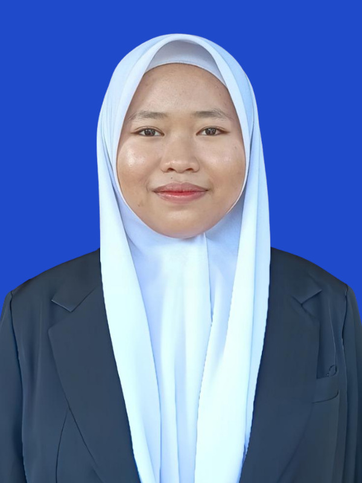

Mahasiswa Pendidikan | Calon Guru Profesional

Binti Rodhyah adalah seorang mahasiswa S1 yang saat ini sedang menempuh pendidikan di Universitas Negeri Makassar dengan jurusan Pendidikan IPA. Saat ini, ia memiliki ketertarikan yang besar dalam bidang IPA khusunya tentang makhluk hidup, dan terus mengembangkan kemampuannya melalui berbagai kegiatan pembelajaran dan pengalaman. Selama proses pendidikannya, Binti telah mempelajari beberapa keterampilan seperti editing, gambar, serta mulai mengerjakan berbagai proyek sederhana untuk mengasah kemampuannya. Ia dikenal sebagai pribadi yang memiliki sifat positif, ceria, suka membantu, bertanggung jawab, rajin serta memiliki semangat untuk terus berkembang dan mencoba hal-hal baru. Ke depannya, Binti berharap dapat mengembangkan keahliannya lebih jauh dan memberikan kontribusi yang bermanfaat di bidang yang ia tekuni.
S1 Pendidikan IPA – Universitas Negeri Makassar
Email: bintiee07@gmail.com